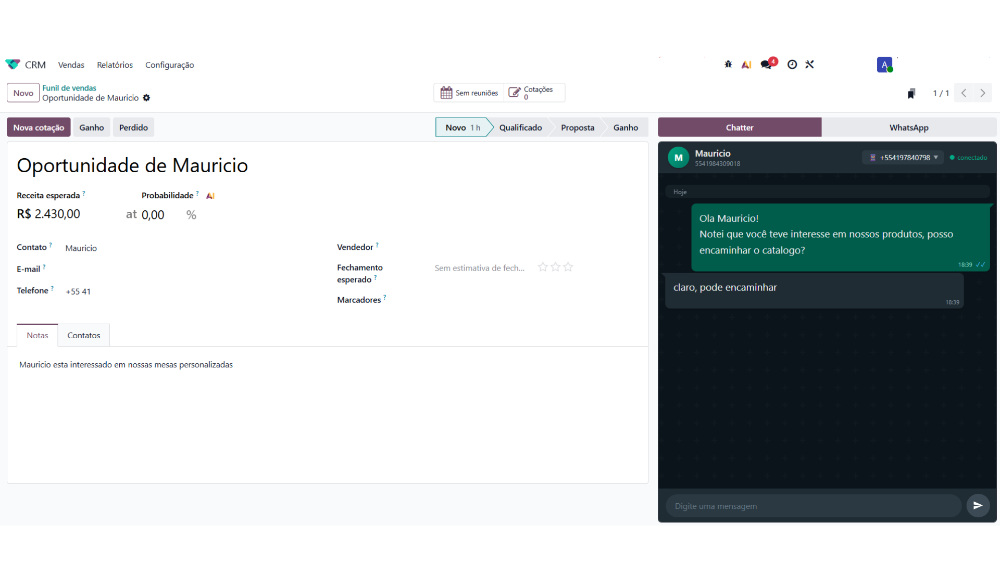

Atenda pelo WhatsApp sem sair do Odoo. Sem perder o número e sem custo por mensagem.

Acesse o hub de integração para adquirir o seu assento e começar a falar:
Ou assista o vídeo explicativo para entender como a plataforma funciona.
SaaS, Odoo.sh ou servidor próprio — a integração roda igual nos três.
Odoo Online / SaaSDisponível |
Odoo.shDisponível |
On-PremiseDisponível |
| Dependências | crm, sale_management — sem bibliotecas Python externas |
|---|---|
| Custo por mensagem | Nenhum. Você usa o seu próprio número. |
Uma aba a mais no chatter. Nada de segunda tela, nada de copiar e colar.
Chatter e WhatsApp na mesma telaAlterne entre o chatter padrão do Odoo e a conversa de WhatsApp com um clique, sem sair do registro. |
Histórico dentro do documentoAs mensagens ficam vinculadas à oportunidade, ao cliente ou à cotação — o contexto não se perde. |
Seu número continua seuSem migração de número, sem número virtual novo, sem perder o histórico da equipe. |
Feito para o BrasilInterface em português e tratamento correto de números brasileiros, com e sem o nono dígito. |
Permissões do OdooO acesso às conversas respeita os grupos e as regras de registro que você já usa no Odoo. |
|
1
Instale o móduloUm clique em Aplicativos, no SaaS, no Odoo.sh ou no seu servidor. Sem dependência externa. |
2
Conecte o númeroAponte o número que sua equipe já usa. Sem migração. |
3
Atenda no OdooAbra qualquer lead ou cotação e a aba WhatsApp já está lá, com a conversa toda. |
Instale o módulo e comece a atender no mesmo lugar onde o seu funil de vendas já vive.
VGR • Odoo 19.0 • Licença OPL-1